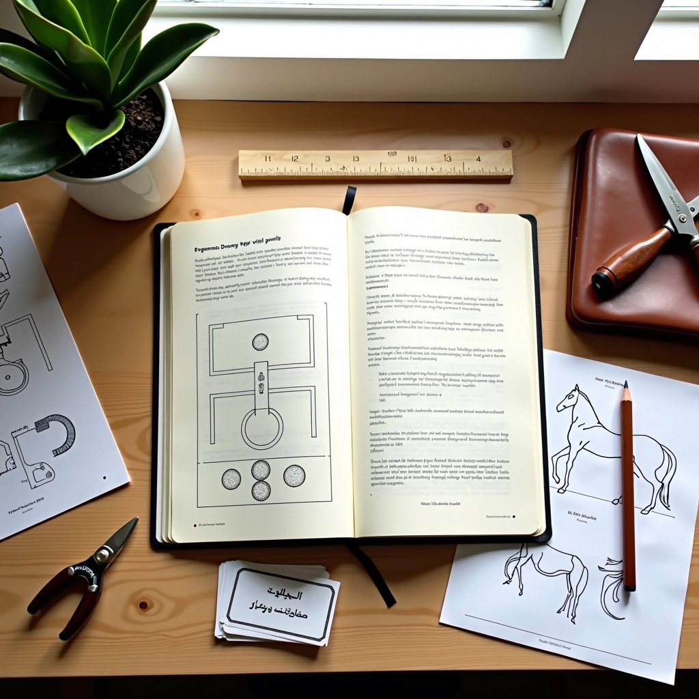

فرسان الحلبة فريق التحرير
نُعِدّ محتوى عملياً وواضحاً عن تمارين العمل المسطح في حلبة الفروسية
من نحن وماذا نفعل
نحن فريق من محرري محتوى الفروسية. ما يوحدنا هو اهتمام حقيقي بتوثيق وشرح تمارين العمل المسطح بطريقة يمكن لأي فارس — مبتدئ أو متقدم — أن يفهمها ويطبقها. موقعنا وُجد لأننا رأينا فجوة. كثير من المعلومات موجودة، لكن لا تكون منظمة بشكل واضح أو لا تركز على التفاصيل التي تهم الفارس اليومي.
نبدأ بسؤال بسيط: "ماذا يحتاج الفارس فعلاً أن يعرفه؟" بعدها نبحث عن الإجابات من خلال دراسة الأساليب المختلفة والممارسات الفعلية في النوادي والحلبات. نتحقق من كل تفصيل تقني — الوضعية، الإيقاع، توازن الحصان — لأننا نعرف أن الخطأ الصغير يمكن أن يؤثر على الأداء. نراجع محتوانا بشكل مستمر ونحدثه عندما تتطور أفضل الممارسات.
الصدق مهم لنا. لا نبالغ في الفوائد أو نعد بتحسينات معجزية. نكتب ما نعتقد أنه مفيد حقاً وآمن وقابل للتطبيق. هدفنا أن تشعر — عندما تقرأ مقالنا — أن شخصاً عملياً قد شرح لك الأمر بوضوح.
كيف نُعِدّ المحتوى
عملية منظمة من البحث إلى النشر والتحديث المستمر
البحث والجمع
نختار المواضيع بناءً على الأسئلة الشائعة والاحتياجات العملية في التدريب اليومي. نبحث عن المعلومات من خلال دراسة أساليب مختلفة والرجوع للممارسات الفعلية في الحلبات.
التحقق والفحص
نتفحص كل تفصيل تقني بعناية — الوضعية، توازن الحصان، التسلسل الحركي — للتأكد من دقته وملاءمته للممارسة الفعلية. نتجنب المعلومات النظرية البحتة التي لا تطبيق عملي لها.
الكتابة والشرح
نكتب بلغة واضحة بعيدة عن التعقيد الغير ضروري. نركز على الفوائد الحقيقية والخطوات العملية دون مبالغة أو ادعاءات فارغة. كل جملة تُكتب بهدف توضيح الموضوع.
المراجعة والتحديث
نراجع المحتوى بشكل مستمر ونحدثه ليعكس أفضل الممارسات الحالية. الفروسية مجال يتطور، وأساليب التدريب الفعالة تتحسن مع الوقت. نحافظ على محتوانا حديثاً ودقيقاً.
المواضيع التي نغطيها
نركز على الجوانب العملية التي تحسن الأداء في الحلبة
أساسيات الجلسة والتوازن
الوضعية الصحيحة على الحصان هي أساس كل شيء. نشرح كيف تؤثر جلسة الفارس على توازن الحصان وردود أفعاله. نغطي توزيع الوزن، موضع الحوض، وكيفية البقاء متوازناً في الحركات المختلفة.
تطور الخطوات والحركات
كيف ينتقل الحصان من الخطو البسيط إلى الحركات الأعلى والأكثر تجميعاً. نشرح التسلسل الطبيعي للتطور، والعلامات التي تدل على أن الحصان جاهز للخطوة التالية. التدرج البطيء يعني نتائج أفضل.
الأشكال الهندسية والمرونة
تمارين الأشكال — المربعات، الدوائر، الأقطار — تحسن المرونة الجانبية للحصان وتطوره البدني. نشرح كيفية تطبيق هذه التمارين بشكل صحيح وما الذي يجب أن تلاحظه أثناء التدريب.
الحركات المتقدمة والتجميع
عندما يكون الحصان جاهزاً، نشرح الحركات الأكثر تقدماً — البيرويت، الحركات المزدوجة — والعمل على التجميع. هذه الحركات تتطلب فهماً عميقاً للتوازن والقيادة.
حل المشاكل الشائعة
الحصان يرفع رأسه؟ لا ينتقل بسهولة بين الحركات؟ نعالج المشاكل التي يواجهها الفرسان بشكل متكرر. نشرح السبب الحقيقي خلف المشكلة والخطوات العملية لحلها.
التعاون والقيادة الفعالة
الفروسية هي حوار بينك وبين حصانك. نشرح كيفية التواصل بوضوح من خلال الساقين والحنكين والوزن. قيادة فعالة تعني حصاناً متعاوناً ومريحاً.
قيمنا الأساسية
الصدق والوضوح
نكتب ما نعتقد أنه صحيح. لا مبالغات أو ادعاءات فارغة. إذا كان الموضوع معقداً، نقول ذلك وننقسم إلى خطوات أبسط.
التركيز على الممارسة
كل ما نكتبه يجب أن يكون قابلاً للتطبيق في الحلبة. النظرية المجردة بلا فائدة. نريد أن تتركك مقالاتنا بمعرفة عملية تحسن أدائك.
احترام الفارس والحصان
الفروسية عن احترام الحصان وفهم احتياجاته. نركز على الأساليب الآمنة والرفاهية. لا اختصارات على حساب سلامة الحصان أو راحته.
التطور المستمر
أفضل الممارسات تتطور. نحن نتعلم ونحدث معرفتنا. المحتوى الذي نشرناه قبل سنة قد نراجعه اليوم لأننا تعلمنا أشياء جديدة.
استكشف المزيد من محتوى الفروسية
تصفح مقالاتنا الكاملة عن تمارين العمل المسطح، أو تواصل معنا إذا كان لديك أسئلة أو اقتراحات.